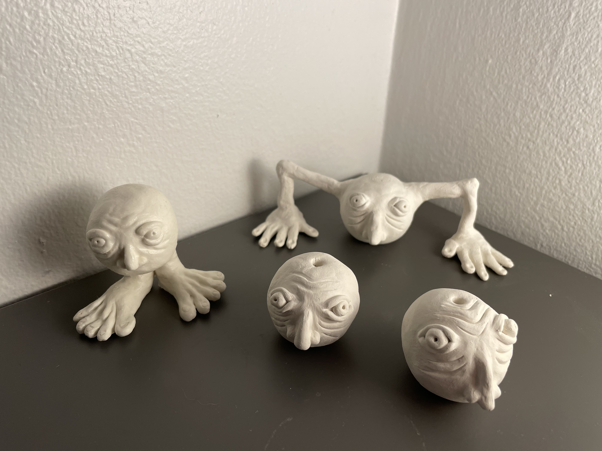
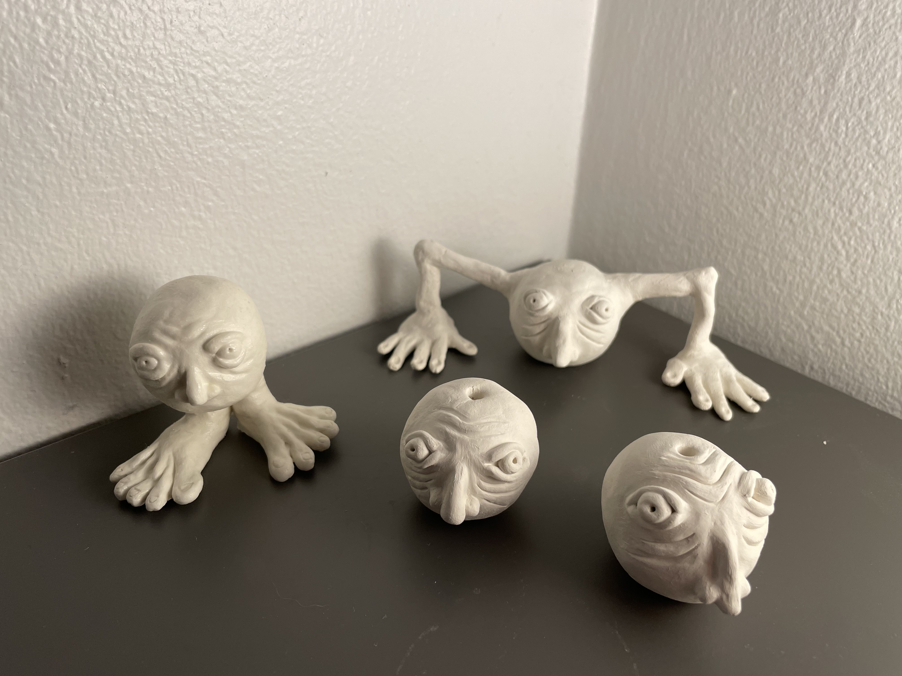

Artworks
Grief
Found objects.
A Study in Curves
Cardboard.
Guys
Clay.
Cowboys
Collage.

End of the World
Collage.

Window
Collage.

Over the course of this year I've spent more time investing in myself and my own art style. Though I haven't nailed it down yet, I've moved away from the more accessible mediums of drawing and painting, and more towards different sculpture techniques. I've been experimenting with different mediums including:
I began to rekindle my interest in the arts when I took an Honors course in the fall about publication and exhibition. Following that I took the intro to sculpture course, and I'm now taking intermediate sculpture. I'm looking forawrd to exploring more techniques this quarter in wood working, metal working, and casting, as well as develop more of my own style and direction in my creation. Some of my more current works are what I've showcased here.
Found objects.
Cardboard.
Clay.
Collage.
Collage.
Collage.